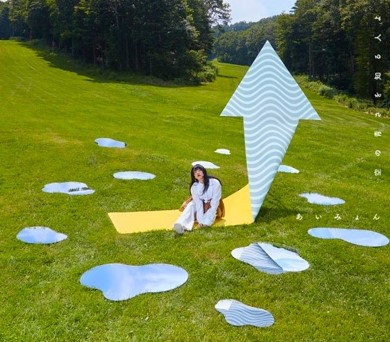
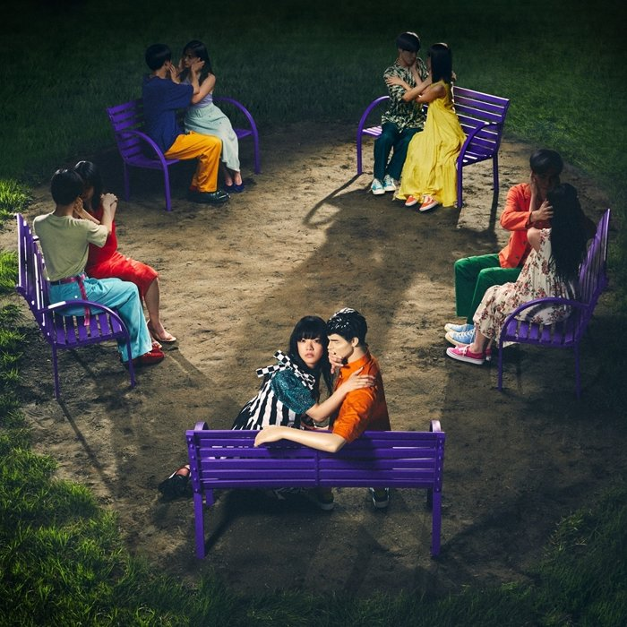

DISCOGRAPHY
空の青さを知る人よ

Single
空の青さを知る人よ
2019.10.02 Release
￥1,000(本体)＋税/ WPCL-13107
- 01 空の青さを知る人よ
(映画「空の青さを知る人よ」劇中主題歌) - 02 葵
(映画「空の青さを知る人よ」エンディング主題歌) - 03 空の青さを知る人よ
(Instrumental) - 04 葵
(Instrumental)
真夏の夜の匂いがする

Single
真夏の夜の匂いがする
2019.07.24 Release
￥1,000(本体)＋税/ WPCL-13070
- 01 真夏の夜の匂いがする
(TBS系火曜ドラマ「Heaven？～ご苦楽レストラン～」主題歌) - 02 テレパしい
- 03 真夏の夜の匂いがする
(Instrumental)
ハルノヒ(通常盤)
Single
ハルノヒ(通常盤)
2019.04.17 Release
￥1,000(本体)＋税/ WPCL-13037
- 01 ハルノヒ
(映画クレヨンしんちゃん 新婚旅行ハリケーン ～失われたひろし～ 主題歌) - 02 鯉
- 03 ハルノヒ
(Instrumental)
今夜このまま

Single
今夜このまま
2018.11.14 Release
￥1,000(本体)＋税/ WPCL-12971
- 01 今夜このまま
(日本テレビ系ドラマ「獣になれない私たち」主題歌) - 02 猫
（2018.10.7 Live at 上野恩賜公園野外ステージ） - 03 風のささやき
（2018.10.7 Live at 上野恩賜公園野外ステージ） - 04 今夜このまま
（instrumental）
マリーゴールド
Single
マリーゴールド
2018.08.08 Release
￥1,000(本体)＋税/ WPCL-12910
- 01 マリーゴールド
(Google アプリ CMソング) - 02 あなたのために
- 03 マリーゴールド
（instrumental）